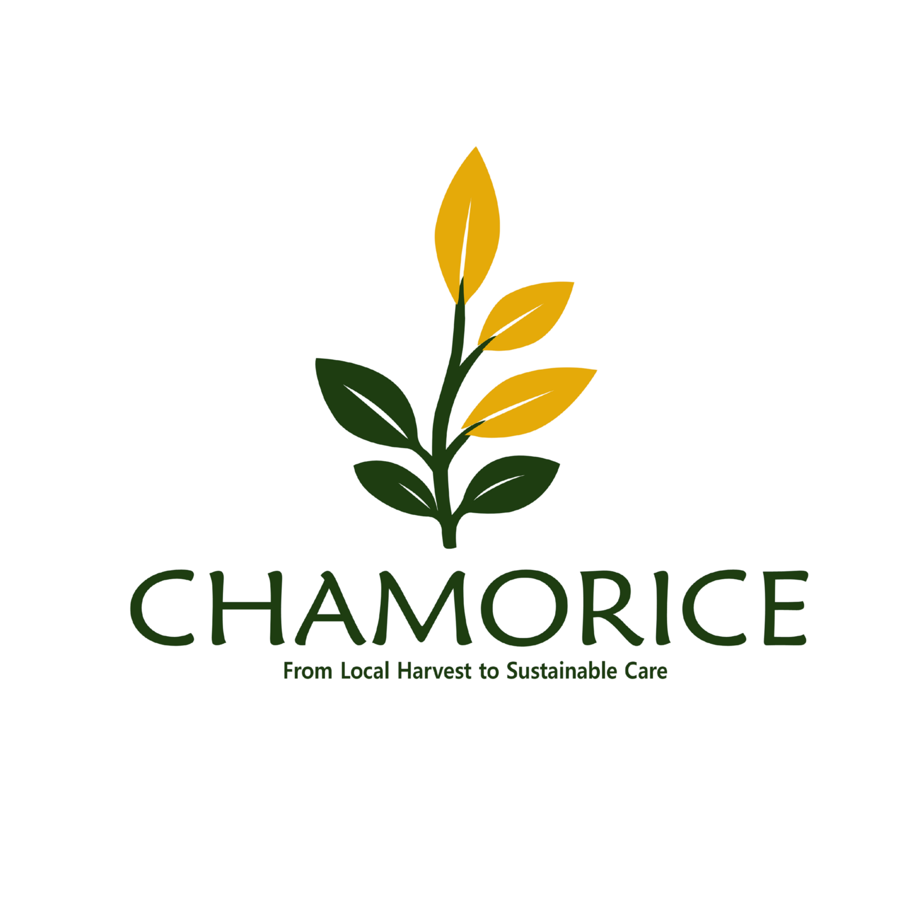
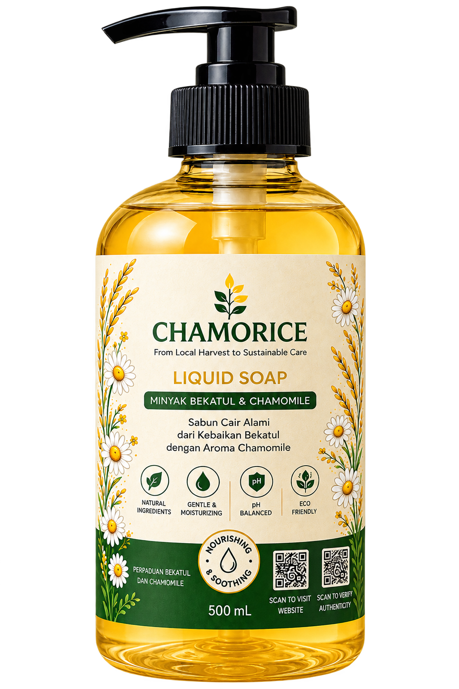

CHAMORICE
Chamomile Liquid Soap
Sabun cair dengan minyak bekatul & aroma chamomile.
Rp 29.000
CHAMORICE menghadirkan sabun cair berbasis minyak bekatul dan chamomile untuk pengalaman perawatan yang lembut, segar, dan menenangkan.

Perawatan alami dengan perpaduan minyak bekatul dan chamomile.
Sabun cair dengan minyak bekatul & aroma chamomile.
Rp 29.000Pilihan keluarga untuk penggunaan harian.
Rp 98.000Bundle perawatan dengan karakter chamomile.
Rp 81.000CHAMORICE lahir dari kepedulian terhadap pemanfaatan hasil pertanian sebagai sumber kecantikan alami yang berkelanjutan.
Minyak bekatul dipadukan dengan chamomile untuk menghasilkan sabun cair yang menghadirkan pengalaman perawatan yang lembut dan menenangkan.
Inovasi untuk kualitas, keamanan, dan transparansi produk.
Masukkan kode autentikasi untuk melihat detail batch dan asal produk.
1 Temukan kode autentikasi pada produk.
2 Masukkan kode pada kolom verifikasi.
3 Lihat detail produk yang terverifikasi.
CHAMORICE membawa nilai keberlanjutan melalui pemanfaatan bahan lokal, pengolahan bernilai tambah, dan perhatian terhadap siklus kemasan.